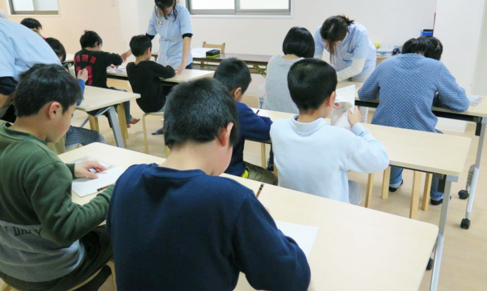
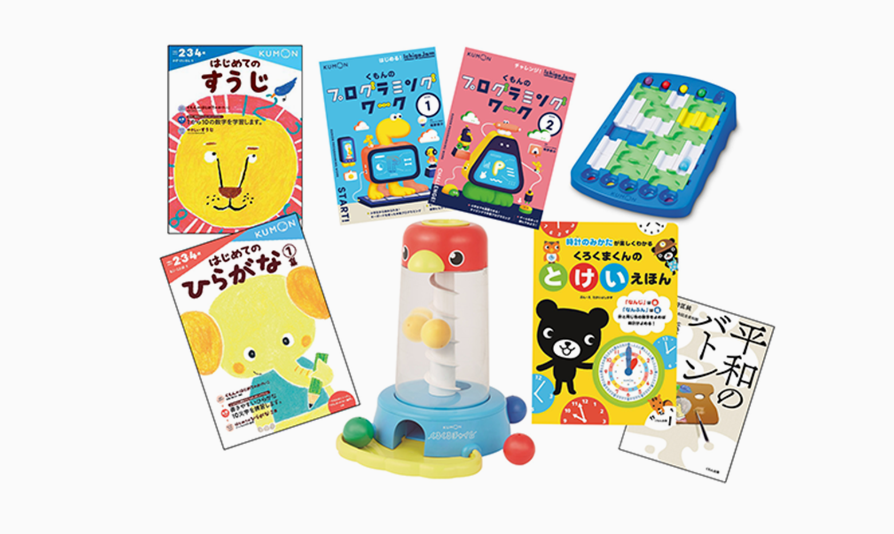

事業紹介BUSINESS
日本発祥の公文式学習法は、KUMONの創立から60余年を経て、国境を越えて様々な地域に広がってきました。
また、これまで培ったノウハウを応用して、公文式教室事業のほかにも幅広い世代・対象に向けたサービスを展開しています。
ここでは、広がりを続けるKUMONの事業についてご紹介します。
SPREAD TO THE WORLD世界に広がるKUMONの想い
一組の親子から始まったKUMONの想いは、日本にとどまらず、世界の国々に広がっています。
初めて海外に公文式教室ができたのは、1974年のニューヨーク。
現在では、50を超える国と地域でKUMONが学ばれています。
全教科合計学習者数
- ヨーロッパ
-
- ・ アイルランド
- ・ アンドラ
- ・ イギリス
- ・ イタリア
- ・ オーストリア
- ・ オランダ
- ・ ギリシャ
- ・ スイス
- ・ スペイン
- ・ ドイツ
- ・ ハンガリー
- ・ フランス
- ・ ブルガリア
- ・ ベルギー
- ・ ポーランド
- ・ ポルトガル
- ・ ルーマニア
- ・ ルクセンブルク
- ・ アイルランド
- ・ アンドラ
- ・ イギリス
- ・ イタリア
- ・ オーストリア
- ・ オランダ
- ・ ギリシャ
- ・ スイス
- ・ スペイン
- ・ ドイツ
- ・ ハンガリー
- ・ フランス
- ・ ブルガリア
- ・ ベルギー
- ・ ポーランド
- ・ ポルトガル
- ・ ルーマニア
- ・ ルクセンブルク
- アフリカ
-
- ・ ケニア
- ・ ザンビア
- ・ ナミビア
- ・ ボツワナ
- ・ 南アフリカ
- 中東
-
- ・ カタール
- ・ バーレーン
- ・ U.A.E.
- オセアニア
-
- ・ オーストラリア
- ・ ニュージーランド
- アジア
-
- ・ インド
- ・ インドネシア
- ・ 韓国
- ・ カンボジア
- ・ シンガポール
- ・ スリランカ
- ・ タイ
- ・ 中国
- ・ 日本
- ・ バングラデシュ
- ・ フィリピン
- ・ ブルネイ
- ・ ベトナム
- ・ マレーシア
- ・ ミャンマー
- ・ 台湾
- ・ 香港
- ・ マカオ
- ・ インド
- ・ インドネシア
- ・ 韓国
- ・ カンボジア
- ・ シンガポール
- ・ スリランカ
- ・ タイ
- ・ 中国
- ・ 日本
- ・ バングラデシュ
- ・ フィリピン
- ・ ブルネイ
- ・ ベトナム
- ・ マレーシア
- ・ ミャンマー
- ・ 台湾
- ・ 香港
- ・ マカオ
- 北米
-
- ・ アメリカ
- ・ カナダ
- ・ パナマ
- ・ メキシコ
- 南米
-
- ・ アルゼンチン
- ・ ウルグアイ
- ・ コロンビア
- ・ チリ
- ・ ブラジル
- ・ ペルー
- ・ ボリビア
公文式学習法が
世界で受け入れられる理由
公文式学習法が
世界で受け入れ
られる理由
海外では様々な地域ごとに、文化や価値観、教育システムが異なってくるため、一般的には教育分野の海外展開は難しいとされています。
そんな教育分野において、KUMONが海外で受け入れられているのは、学びの根幹となる基礎学力を育てることを目的とした「個人別・学力別」の学習法と、それらを実現するための独自のメソッドに基づいた教材、そして人の可能性を発見し、伸ばしたいと強く想う各地域の指導者とKUMONの社員の存在があるからです。
一人ひとりに合わせた指導で将来にわたって通用する「生きる力」を育む学習法だからこそ、KUMONは世界50を超える国と地域へと広がっています。
また、世界各国の社員・指導者同士が学び合う機会を設けて
教材や指導の質の向上を図ることも、大切な取り組みの一つです。
数と言語の両面からこそ、能力を最大限に伸ばすことができると考え、従来の算数・数学教材に加えて、「読解力の養成」を目的とした「母国語教材」を開発。
英語母国語教材はイギリス・アメリカなど24の国と地域、中国語母国語教材は中国など6の国と地域、スペイン語母国語教材はスペインなど8か国で展開しています。（2020年6月現在）
持続可能な
未来のための教育
持続可能な
未来のための教育
世界の貧困を撲滅し持続可能な世界を実現するために、国連は2015年9月、「持続可能な開発のための2030アジェンダ」を採択、17の目標と169のターゲットからなる「持続可能な開発目標（Sustainable Development Goals：SDGs）」を掲げました。
貧困、飢餓、ジェンダー、教育、環境、経済成長、人権など、幅広いテーマをカバーしており、
2030年までの達成が目指されています。
豊かさを追求しながら、地球環境問題に対処し、「誰一人取り残さないこと」が強調されています。
世界中のより多くの子ども達が、自らの可能性を発見し、その能力を最大限に伸ばしていく
KUMONの取り組みは、SDGsの目標4「質の高い教育をみんなに」の達成はもちろん、
教育支援を通じて様々な社会課題の解決につながると信じています。
COLUMN開発途上国
への貢献
様々な貧困者支援を行っているバングラデシュのNGO団体BRACのアベド総裁の教育への強い想いを受け、KUMONはパートナーとして協働プロジェクトを開始。2015年にJICA（国際協力機構）、JETRO（日本貿易振興機構）、東大などの支援を受けて、BRACが運営する貧困層向けの一部のBRACスクール（小学校）で、公文式導入効果検証を8か月間実施し、2017年には首都ダッカに中高所得層向けの公文式教室をBRAC直営で開設しました。
2019年7月、BRAC、BRACが設立した「BRAC Kumon Limited(BKL)」と三者間ライセンス契約締結。バングラデシュ国内において公文式直営教室およびFC教室の開設・運営事業をBKLが担い、同国内での公文式普及を協働で推進しています。教室から生み出される利益を、BRACスクール（約15,000校）での公文式無償提供への資金に充てられるよう、協働プロジェクトは進行中。貧困層の子どもたちへの持続的な教育支援を目指しています。
様々な貧困者支援を行っているバングラデシュのNGO団体BRACのアベド総裁の教育への強い想いを受け、KUMONはパートナーとして協働プロジェクトを開始。2015年にJICA（国際協力機構）、JETRO（日本貿易振興機構）、東大などの支援を受けて、BRACが運営する貧困層向けの一部のBRACスクール（小学校）で、公文式導入効果検証を8か月間実施し、2017年には首都ダッカに中高所得層向けの公文式教室をBRAC直営で開設しました。
2019年7月、BRAC、BRACが設立した「BRAC Kumon Limited(BKL)」と三者間ライセンス契約締結。バングラデシュ国内において公文式直営教室およびFC教室の開設・運営事業をBKLが担い、同国内での公文式普及を協働で推進しています。教室から生み出される利益を、BRACスクール（約15,000校）での公文式無償提供への資金に充てられるよう、協働プロジェクトは進行中。貧困層の子どもたちへの持続的な教育支援を目指しています。
「できるようになったこと」篇
〜気づき編〜
SPREAD TO GENERATIONS世代を超えて広がるKUMONの想い
学びを通じて能力を伸ばす喜びは、子どもだけのものではありません。
KUMONは、自らの可能性を広げ、豊かな人生を願うすべての人のために、様々な学びの場を創出しています。
さらに、学びを軸とした地域コミュニティが広がることで、地域社会に貢献します。
- 乳幼児
- 小学生
- 中高生
- 大学生
- 社会人
- 高齢者
Baby Kumon
大切な親子のきずなを、
「ことば」の力で育みたい
0~2歳の親子のためのBaby Kumon。「親子のきずなを育み、伸びる子どもの土台をつくる」をコンセプトに、歌や読み聞かせを中心とした「ことばのやりとり」を楽しめるようサポートします。
公文式教室
一人ひとりが持つ可能性を
最大限に伸ばす教育
子どもたちに「生きる力」を育む公文式学習法。算数・数学、英語、国語の学習を通じ、すべての学びの根幹となる基礎学力を育てます。公文式教室の設置、運営管理は、国内の主力事業となります。
学校・施設導入
多様な学力に対応できる
公文式を、学校・施設の現場へ
学校や企業、放課後等デイサービス、就労移行支援施設や児童福祉施設などのさまざまな施設で公文式を導入し、学力・能力向上や自己実現をさまざまな形でサポートしています。
語学プログラム
多様な学力に対応できる
公文式を、学校・施設の現場へ
外国の方に向けた日本語学習プログラムです。英語版・ポルトガル語版・中国語版の教材を活用し、出身国や年齢層も様々な生徒が「自学自習」で日本語を学んでいます。
外国語学習で、
より広い視野を育む
初心者、経験者に関わらず、幼児・小学生から社会人までが学習しています。語学を通じて、国際的に活躍できる力を養います。
グローバルで活躍する
人材の育成を目指す
グローバル人材の育成を目指し、TOEFL®の若年層向けテストとしてTOEFL Primary® 、TOEFL Junior® の普及・運営を行っています。
くもん出版
書籍や知育玩具を通して、
子どもの可能性を引き出す
ドリル、カード、絵本・児童書などの出版物や知育玩具の開発・販売を行います。学ぶ力を引き出す商品を通して、子どもたちの未来に貢献することを使命としています。
書写

学習療法
健やかで心豊かなくらしを送る、
高齢社会に貢献する
認知能力やコミュニケーション機能、身辺自立機能などの維持・改善を目的とする「学習療法」と、認知症の予防を目指す「脳の健康教室」を展開しています。
～公文式の効果 学校導入編～
～学習療法の起こり編～
キーワードから探す
気になるキーワードからコンテンツを検索できます。